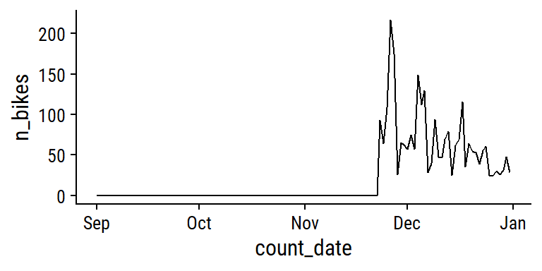
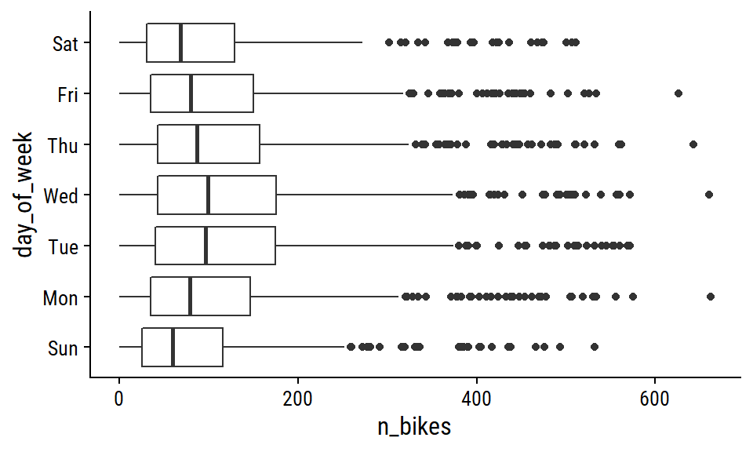

![]()
R setup
library(tidyverse)
library(httr)
library(lubridate)
library(gt)
library(glue)
library(dunnr)
extrafont::loadfonts(device = "win", quiet = TRUE)
theme_set(theme_td())
set_geom_fonts()
set_palette()Part 1 of predicting bike ridership in Halifax, Nova Scotia. In this post, I retrieve and explore data from two open APIs.
April 27, 2022
In 2016, the city of Halifax installed its first cyclist tracker on Agricola Street. Last year, the city made bike counter data available on their open data platform. As a cyclist and Haligonian, this is of course interesting to me personally. As a data scientist, this seems like a nice opportunity to work through a machine learning project end-to-end: from retrieving, exploring, and processing the data, to building and evaluating models, to producing an end product. (A REST API? A Shiny app? TBD.)
In this post, I get and explore data from two sources: (1) the aforementioned bike counter data from city of Halifax, and (2) historical weather data from the government of Canada.
The bicycle counts were easy enough to find on Halifax’s platform: (https://catalogue-hrm.opendata.arcgis.com/datasets/45d4ecb0cb48469186e683ebc54eb188_0/explore?showTable=true). Each data set comes with a nice API explorer for constructing queries. I’ll use httr to GET the data with the basic query provided there:
Response [https://services2.arcgis.com/11XBiaBYA9Ep0yNJ/arcgis/rest/services/Bicycle_Counts/FeatureServer/0/query?where=1%3D1&outFields=*&outSR=4326&f=json]
Date: 2022-04-27 03:26
Status: 200
Content-Type: application/json; charset=utf-8
Size: 579 kBThe response code (200) indicates a successful connection. The data comes in JSON format, which I can parse to an R list with:
List of 6
$ objectIdFieldName : chr "ObjectId"
$ uniqueIdField :List of 2
$ globalIdFieldName : chr ""
$ fields :List of 11
$ exceededTransferLimit: logi TRUE
$ features :List of 2000This returned a list of 6 items. The fields item is a list of variables:
fields <- map_dfr(
parsed_content$fields,
# Drop NULL elements so I can convert to a tibble
~ discard(.x, is.null) %>% as_tibble()
)
gt(fields)| name | type | alias | sqlType | length |
|---|---|---|---|---|
| CHANNEL_ID | esriFieldTypeString | CHANNEL_ID | sqlTypeNVarchar | 256 |
| CHANNEL_NAME | esriFieldTypeString | CHANNEL_NAME | sqlTypeNVarchar | 4000 |
| SERIAL_NUMBER | esriFieldTypeString | SERIAL_NUMBER | sqlTypeNVarchar | 4000 |
| SITE_NAME | esriFieldTypeString | SITE_NAME | sqlTypeNVarchar | 4000 |
| LATITUDE | esriFieldTypeDouble | LATITUDE | sqlTypeFloat | NA |
| LONGITUDE | esriFieldTypeDouble | LONGITUDE | sqlTypeFloat | NA |
| INSTALLATION_DATE | esriFieldTypeDate | INSTALLATION_DATE | sqlTypeTimestamp2 | 8 |
| COUNT_DATETIME | esriFieldTypeDate | COUNT_DATETIME | sqlTypeTimestamp2 | 8 |
| COUNTER_TYPE | esriFieldTypeString | COUNTER_TYPE | sqlTypeNVarchar | 4000 |
| COUNTER_VALUE | esriFieldTypeInteger | COUNTER_VALUE | sqlTypeInteger | NA |
| ObjectId | esriFieldTypeOID | ObjectId | sqlTypeInteger | NA |
The data is the features item, which itself is a list of length 2000. Here is the first element:
$attributes
$attributes$CHANNEL_ID
[1] "100059339"
$attributes$CHANNEL_NAME
[1] "Hollis St"
$attributes$SERIAL_NUMBER
[1] "X2H20032465"
$attributes$SITE_NAME
[1] "Hollis St"
$attributes$LATITUDE
[1] 44.64799
$attributes$LONGITUDE
[1] -63.57352
$attributes$INSTALLATION_DATE
[1] 1.594166e+12
$attributes$COUNT_DATETIME
[1] 1.595966e+12
$attributes$COUNTER_TYPE
[1] "Bicycle"
$attributes$COUNTER_VALUE
[1] 2
$attributes$ObjectId
[1] 1Looks like there is another level of nesting with attributes. Compile all of these elements into a single data frame:
Rows: 2,000
Columns: 11
$ CHANNEL_ID <chr> "100059339", "100059339", "100059339", "100059339", …
$ CHANNEL_NAME <chr> "Hollis St", "Hollis St", "Hollis St", "Hollis St", …
$ SERIAL_NUMBER <chr> "X2H20032465", "X2H20032465", "X2H20032465", "X2H200…
$ SITE_NAME <chr> "Hollis St", "Hollis St", "Hollis St", "Hollis St", …
$ LATITUDE <dbl> 44.64799, 44.64799, 44.64799, 44.64799, 44.64799, 44…
$ LONGITUDE <dbl> -63.57352, -63.57352, -63.57352, -63.57352, -63.5735…
$ INSTALLATION_DATE <dbl> 1.594166e+12, 1.594166e+12, 1.594166e+12, 1.594166e+…
$ COUNT_DATETIME <dbl> 1.595966e+12, 1.595970e+12, 1.595974e+12, 1.595977e+…
$ COUNTER_TYPE <chr> "Bicycle", "Bicycle", "Bicycle", "Bicycle", "Bicycle…
$ COUNTER_VALUE <int> 2, 1, 2, 2, 0, 0, 0, 0, 0, 0, 6, 4, 13, 8, 5, 6, 8, …
$ ObjectId <int> 1, 2, 3, 4, 5, 6, 7, 8, 9, 10, 11, 12, 13, 14, 15, 1…Note that just 2000 records were returned. The exceededTransferLimit = TRUE value tells us that this is the limit of the API. I can get the total count of records by altering the original query slightly:
[1] 124356So to get all of the data at 2000 records per request, I’ll have to make a minimum of 63 calls to the API. The API offers a “resultOffset” argument to get records in sequence. Make a function to get 2000 records for a given offset:
get_bike_data <- function(offset) {
# Need to prevent scientific notation, e.g. "1e+05" instead of "100000"
offset <- format(offset, scientific = FALSE)
parsed_content <- httr::GET(paste0(query_url, "&resultOffset=", offset)) %>%
content(as = "parsed")
map_dfr(
parsed_content$features,
~ as_tibble(.x$attributes)
)
}And combine it all into a single data frame:
Rows: 124,356
Columns: 11
$ CHANNEL_ID <chr> "100059339", "100059339", "100059339", "100059339", …
$ CHANNEL_NAME <chr> "Hollis St", "Hollis St", "Hollis St", "Hollis St", …
$ SERIAL_NUMBER <chr> "X2H20032465", "X2H20032465", "X2H20032465", "X2H200…
$ SITE_NAME <chr> "Hollis St", "Hollis St", "Hollis St", "Hollis St", …
$ LATITUDE <dbl> 44.64799, 44.64799, 44.64799, 44.64799, 44.64799, 44…
$ LONGITUDE <dbl> -63.57352, -63.57352, -63.57352, -63.57352, -63.5735…
$ INSTALLATION_DATE <dbl> 1.594166e+12, 1.594166e+12, 1.594166e+12, 1.594166e+…
$ COUNT_DATETIME <dbl> 1.595966e+12, 1.595970e+12, 1.595974e+12, 1.595977e+…
$ COUNTER_TYPE <chr> "Bicycle", "Bicycle", "Bicycle", "Bicycle", "Bicycle…
$ COUNTER_VALUE <int> 2, 1, 2, 2, 0, 0, 0, 0, 0, 0, 6, 4, 13, 8, 5, 6, 8, …
$ ObjectId <int> 1, 2, 3, 4, 5, 6, 7, 8, 9, 10, 11, 12, 13, 14, 15, 1…This returned 124356 records, as expected. The ObjectId should be a unique sequential identifier from 1 to 124356, which I’ll check:
First thing I usually do with a new data set is clean the column names:
Rows: 124,356
Columns: 11
$ channel_id <chr> "100059339", "100059339", "100059339", "100059339", …
$ channel_name <chr> "Hollis St", "Hollis St", "Hollis St", "Hollis St", …
$ serial_number <chr> "X2H20032465", "X2H20032465", "X2H20032465", "X2H200…
$ site_name <chr> "Hollis St", "Hollis St", "Hollis St", "Hollis St", …
$ latitude <dbl> 44.64799, 44.64799, 44.64799, 44.64799, 44.64799, 44…
$ longitude <dbl> -63.57352, -63.57352, -63.57352, -63.57352, -63.5735…
$ installation_date <dbl> 1.594166e+12, 1.594166e+12, 1.594166e+12, 1.594166e+…
$ count_datetime <dbl> 1.595966e+12, 1.595970e+12, 1.595974e+12, 1.595977e+…
$ counter_type <chr> "Bicycle", "Bicycle", "Bicycle", "Bicycle", "Bicycle…
$ counter_value <int> 2, 1, 2, 2, 0, 0, 0, 0, 0, 0, 6, 4, 13, 8, 5, 6, 8, …
$ object_id <int> 1, 2, 3, 4, 5, 6, 7, 8, 9, 10, 11, 12, 13, 14, 15, 1…Next I want to deal with the installation_date and count_datetime variables, which are very large integers. From fields above, the data type for these variables is esriFieldTypeDate. After some digging on Google, turns out this is Unix time (the number of milliseconds since January 1, 1970; also called epoch time). With as.POSIXct(), I can supply the number of seconds and set origin = "1970-01-01" to get back the correct datetime objects:
bike_data <- bike_data %>%
mutate(
across(c(installation_date, count_datetime),
~ as.POSIXct(.x / 1000, tz = "UTC", origin = "1970-01-01")),
# These are just dates, the time of day doesn't matter
installation_date = as.Date(installation_date),
# I'll also want the date without time of day
count_date = as.Date(count_datetime)
)These variables are unique to the sites:
bike_data %>%
count(site_name, latitude, longitude, serial_number, installation_date,
counter_type, name = "n_records") %>%
gt()| site_name | latitude | longitude | serial_number | installation_date | counter_type | n_records |
|---|---|---|---|---|---|---|
| Dartmouth Harbourfront Greenway | 44.66436 | -63.55736 | X2H20114473 | 2021-07-08 | Bicycle | 13976 |
| Hollis St | 44.64799 | -63.57352 | X2H20032465 | 2020-07-08 | Bicycle | 15748 |
| South Park St | 44.64194 | -63.57972 | X2H19070467 | 2019-09-01 | Bicycle | 46424 |
| Vernon St | 44.64292 | -63.59154 | X2H20114470 | 2020-12-09 | Bicycle | 24104 |
| Windsor St | 44.65466 | -63.60368 | X2H20114472 | 2020-12-09 | Bicycle | 24104 |
Drop serial_number and counter_type, which aren’t useful.
Sites can have multiple channels:
| site_name | channel_name | channel_id | n_records |
|---|---|---|---|
| Dartmouth Harbourfront Greenway | Dartmouth Harbourfront Greenway Northbound | 353280085 | 6988 |
| Dartmouth Harbourfront Greenway | Dartmouth Harbourfront Greenway Southbound | 353280086 | 6988 |
| Hollis St | Hollis St | 100059339 | 15748 |
| South Park St | South Park St Northbound | 101054257 | 23212 |
| South Park St | South Park St Southbound | 102054257 | 23212 |
| Vernon St | Vernon St Northbound | 353252897 | 12052 |
| Vernon St | Vernon St Southbound | 353252898 | 12052 |
| Windsor St | Windsor St Northbound | 353252910 | 12052 |
| Windsor St | Windsor St Southbound | 353252909 | 12052 |
All but the Hollis St site has separate northbound and southbound channels.
For each site, check the installation_date relative to the range of count_date:
bike_data %>%
group_by(site_name, installation_date) %>%
summarise(min_count_date = min(count_date), max_count_date = max(count_date),
.groups = "drop") %>%
gt()| site_name | installation_date | min_count_date | max_count_date |
|---|---|---|---|
| Dartmouth Harbourfront Greenway | 2021-07-08 | 2021-07-08 | 2022-04-25 |
| Hollis St | 2020-07-08 | 2020-07-08 | 2022-04-25 |
| South Park St | 2019-09-01 | 2019-09-01 | 2022-04-25 |
| Vernon St | 2020-12-09 | 2020-12-09 | 2022-04-25 |
| Windsor St | 2020-12-09 | 2020-12-09 | 2022-04-25 |
Everything is nicely aligned: the first data corresponds to the installation date, and the last data corresponds to the date the data were retrieved.
Plot the position of each of the counters using the given latitude and longitude, overlaid on a map of Halifax with the ggmap package:1
ggmap(halifax_map) +
geom_point(data = site_locs, size = 4,
aes(fill = site_name), shape = 21, color = "white") +
ggrepel::geom_label_repel(
data = site_locs,
aes(color = site_name, label = str_trunc(site_name, width = 25)),
box.padding = 1.0
) +
theme_void() +
theme(legend.position = "none")For each site and channel, get the time of day from count_datetime to determine the frequency of collection:
bike_data %>%
mutate(time_of_day = format(count_datetime, "%H:%M:%S")) %>%
count(site_name, time_of_day, name = "n_records") %>%
ggplot(aes(y = time_of_day, x = n_records)) +
geom_col() +
facet_wrap(~ str_trunc(site_name, 15), nrow = 1) +
scale_x_continuous(expand = c(0, 0), breaks = c(0, 500, 1000, 1500)) +
dunnr::add_facet_borders()Each counter reports observations at the hour mark (+1 second). There are some slight difference in the number of records due to the time of day I retrieved the data.
I made an assumption that the count_datetime variable was in UTC timezone. I can check this assumption by looking at average counts (over the entire data set).
bike_data_tod <- bike_data %>%
mutate(
time_of_day = format(count_datetime, "%H:%M:%S"),
# Create a dummy variable with arbitrary date so I can plot time of day
time_of_day = lubridate::ymd_hms(
paste0("2022-04-22 ", time_of_day)
)
)
bike_data_tod %>%
group_by(site_name, time_of_day) %>%
summarise(
n = n(), mean_count = mean(counter_value),
.groups = "drop"
) %>%
ggplot(aes(x = time_of_day, y = mean_count)) +
geom_area(fill = td_colors$nice$mellow_yellow, color = "black") +
facet_wrap(~ site_name, ncol = 1, scales = "free_y") +
scale_x_datetime(date_breaks = "2 hours", date_labels = "%H") +
scale_y_continuous(expand = c(0, 0)) +
dunnr::add_facet_borders()These peaks at around 8AM and 5PM tell me that the data is actually recorded in the local time zone (Atlantic), not UTC like I assumed. If they were in UTC time, the peaks would correspond to 11AM and 8PM locally, which would be odd times for peak cyclists.
Any interesting trends in different channels?
bike_data_tod %>%
# Remove Hollis St, which does not have different channels
filter(site_name != "Hollis St") %>%
mutate(channel_direction = str_extract(channel_name, "(North|South)bound")) %>%
group_by(site_name, channel_direction, time_of_day) %>%
summarise(mean_count = mean(counter_value), .groups = "drop") %>%
ggplot(aes(x = time_of_day, y = mean_count, color = channel_direction)) +
geom_line() +
facet_wrap(~ site_name, ncol = 1, scales = "free_y") +
scale_x_datetime(date_breaks = "2 hours", date_labels = "%H") +
theme(legend.position = "top")Vernon St and Windsor St counters have higher traffic Southbound (heading downtown) at the start of the typical workday, and higher traffic Northbound (leaving downtown) at the end of the typical workday.
I am less interested in counts over the course of a day or by channel, and more interested in daily counts. Now that I know the count_date is correctly converted with the local time, get the sum at each site and each 24 hour day:
Now plot counts per day at each site:
bike_data_daily_counts %>%
ggplot(aes(x = count_date, y = n_bikes)) +
geom_line() +
facet_wrap(~ site_name, ncol = 1, scales = "free_y") +
dunnr::add_facet_borders()The seasonal trends are very obvious from this plot. One thing that stood out to me is the big increase from 2020 to 2021 on South Park St. It may be representative of the start of the COVID pandemic, but I think it also has to do with the addition of protected bike lanes in December 2020. Before 2020, there appears to be a series of 0 counts on South Park St which may be artifacts:
bike_data_daily_counts %>%
filter(site_name == "South Park St", count_date < "2020-01-01") %>%
ggplot(aes(x = count_date, y = n_bikes)) +
geom_line()
I’m almost certain this series of zeroes is not real, so I’ll remove it from the data. Find the date of the first non-zero n_bikes at this site, and filter out data before then:
south_park_min_date <- bike_data_daily_counts %>%
filter(site_name == "South Park St", n_bikes > 0) %>%
pull(count_date) %>%
min()
south_park_min_date[1] "2019-11-23"Overlay counts by year for each site:
bike_data_daily_counts %>%
mutate(count_year = year(count_date),
# Replace year with 1970 so I can plot on the same scale
count_date = as.Date(yday(count_date), origin = "1970-01-01")) %>%
ggplot(aes(x = count_date, y = n_bikes, color = factor(count_year))) +
geom_line(size = 1, alpha = 0.8) +
facet_wrap(~ site_name, ncol = 1, scales = "free_y") +
scale_x_date(date_labels = "%B") +
dunnr::add_facet_borders() +
theme(legend.position = "bottom") +
labs(x = NULL, color = "Year") +
scale_color_brewer(palette = "Set1")I’m interested in day of the week effects as well:
bike_data_daily_counts %>%
mutate(day_of_week = wday(count_date, label = TRUE)) %>%
ggplot(aes(y = day_of_week, x = n_bikes)) +
geom_boxplot()
Less activity on the weekends.
Temporal data are probably the most important predictors of ridership, but I’m sure a close second is the day’s weather. I’ll get this with the API provided by the Meteorological Service of Canada. I can get a list of available data sets (which they call collections) as follows:2
List of 2
$ collections:List of 70
$ links :List of 3The first element of collections:
List of 7
$ id : chr "hydrometric-stations"
$ title : chr "Hydrometric Monitoring Stations"
$ description: chr "A station is a site on a river or lake where water quantity (water level and flow) are collected and recorded."
$ keywords :List of 2
..$ : chr "station"
..$ : chr "hydrometric station"
$ links :List of 13
..$ :List of 5
..$ :List of 5
..$ :List of 5
..$ :List of 5
..$ :List of 5
..$ :List of 4
..$ :List of 4
..$ :List of 4
..$ :List of 4
..$ :List of 4
..$ :List of 4
..$ :List of 4
..$ :List of 4
$ extent :List of 2
..$ spatial :List of 2
..$ temporal:List of 1
$ itemType : chr "feature"Unlike the bicycle counts data, this nested format doesn’t lend itself well to direct conversion to a tibble:
Error:
! Tibble columns must have compatible sizes.
• Size 2: Columns `keywords` and `extent`.
• Size 13: Column `links`.
ℹ Only values of size one are recycled.Instead, I can use enframe() to get a two-column data frame:
# A tibble: 7 × 2
name value
<chr> <list>
1 id <chr [1]>
2 title <chr [1]>
3 description <chr [1]>
4 keywords <list [2]>
5 links <list [13]>
6 extent <named list [2]>
7 itemType <chr [1]> Assuming every item in the collections list has the same structure, I’ll just extract the id, title, and description:
collections_df <- map_dfr(
collections,
~ enframe(.x) %>%
filter(name %in% c("id", "title", "description")) %>%
pivot_wider(names_from = name, values_from = value)
)
gt(collections_df) %>%
tab_options(container.height = 300, container.overflow.y = TRUE)| id | title | description |
|---|---|---|
| hydrometric-stations | Hydrometric Monitoring Stations | A station is a site on a river or lake where water quantity (water level and flow) are collected and recorded. |
| hydrometric-daily-mean | Daily Mean of Water Level or Flow | The daily mean is the average of all unit values for a given day. |
| hydrometric-monthly-mean | Monthly Mean of Water Level or Flow | The monthly mean is the average of daily mean values for a given month. |
| hydrometric-annual-statistics | Annual Maximum and Minimum Daily Water Level or Flow | The annual maximum and minimum daily data are the maximum and minimum daily mean values for a given year. |
| hydrometric-annual-peaks | Annual Maximum and Minimum Instantaneous Water Level or Flow | The annual maximum and minimum instantaneous data are the maximum and minimum instantaneous values for a given year. |
| hydrometric-realtime | Real-time hydrometric data | Real-time water level and flow (discharge) data collected at over 2100 hydrometric stations across Canada (last 30 days). |
| climate-normals | 1981-2010 Climate Normals | Climate Normals are used to summarize or describe the average climatic conditions of a particular location. At the completion of each decade, Environment and Climate Change Canada updates its climate normals for as many locations and as many climatic characteristics as possible. The climate normals offered here are based on Canadian climate stations with at least 15 years of data between 1981 to 2010. |
| climate-stations | Climate Stations | Climate observations are derived from two sources of data. The first are Daily Climate Stations producing one or two observations per day of temperature, precipitation. The second are hourly stations that typically produce more weather elements e.g. wind or snow on ground. |
| climate-monthly | Monthly Climate Observation Summaries | A cross-country summary of the averages and extremes for the month, including precipitation totals, max-min temperatures, and degree days. This data is available from stations that produce daily data. |
| climate-daily | Daily Climate Observations | Daily climate observations are derived from two sources of data. The first are Daily Climate Stations producing one or two observations per day of temperature, precipitation. The second are hourly stations that typically produce more weather elements e.g. wind or snow on ground. Only a subset of the total stations is shown due to size limitations. The criteria for station selection are listed as below. The priorities for inclusion are as follows: (1) Station is currently operational, (2) Stations with long periods of record, (3) Stations that are co-located with the categories above and supplement the period of record |
| climate-hourly | Hourly Climate Observations | Hourly climate observations are derived from the data source HLY01. These are stations that produce hourly meteorological observations, taken each hour of the day for the hours 00h-23h, for both daily (temperature, precipitation) and non-daily elements (station pressure, relative humidity, visibility). Only a subset of the total stations are shown due to size limitations. The stations were selected based on the following criteria: (1) Stations near cities with populations greater than 10,000, (2) Stations with long periods of record of at least 30 years of data, (3) Stations selected for the 1991-2020 WMO Normals, (4) Stations with RBCN designation not selected for 1991-2020 WMO Normals, and/or (5) Stations whose sum when joined with co-located/successor stations equates to a period of record of 30 years or greater. |
| ahccd-stations | Adjusted and Homogenized Canadian Climate Data (AHCCD) Stations | Climate station datasets that incorporate adjustments (derived from statistical procedures) to the original historical station data to account for discontinuities from non-climatic factors, such as instrument changes or station relocation. |
| ahccd-annual | Adjusted and Homogenized Canadian Climate Data (AHCCD) Annual | Adjusted and Homogenized Canadian Climate Data (AHCCD) are climate station datasets that incorporate adjustments (derived from statistical procedures) to the original historical station data to account for discontinuities from non-climatic factors, such as instrument changes or station relocation. Data are provided for temperature, precipitation, pressure and wind speed. Station trend data are provided when available. Trends are calculated using the Theil-Sen method using the station's full period of available data. The availability of trends will vary by station; if more than 5 consecutive years are missing data or more than 10% of the data within the time series is missing, a trend was not calculated. |
| ahccd-seasonal | Adjusted and Homogenized Canadian Climate Data (AHCCD) Seasonal | Adjusted and Homogenized Canadian Climate Data (AHCCD) are climate station datasets that incorporate adjustments (derived from statistical procedures) to the original historical station data to account for discontinuities from non-climatic factors, such as instrument changes or station relocation. Data are provided for temperature, precipitation, pressure and wind speed. Station trend data are provided when available. Trends are calculated using the Theil-Sen method using the station's full period of available data. The availability of trends will vary by station; if more than 5 consecutive years are missing data or more than 10% of the data within the time series is missing, a trend was not calculated. |
| ahccd-monthly | Adjusted and Homogenized Canadian Climate Data (AHCCD) Monthly | Adjusted and Homogenized Canadian Climate Data (AHCCD) are climate station datasets that incorporate adjustments (derived from statistical procedures) to the original historical station data to account for discontinuities from non-climatic factors, such as instrument changes or station relocation. Data are provided for temperature, precipitation, pressure and wind speed. Station trend data are provided when available. Trends are calculated using the Theil-Sen method using the station's full period of available data. The availability of trends will vary by station; if more than 5 consecutive years are missing data or more than 10% of the data within the time series is missing, a trend was not calculated. |
| ahccd-trends | Adjusted and Homogenized Canadian Climate Data (AHCCD) Trends | Adjusted and Homogenized Canadian Climate Data (AHCCD) are climate station datasets that incorporate adjustments (derived from statistical procedures) to the original historical station data to account for discontinuities from non-climatic factors, such as instrument changes or station relocation. Data are provided for temperature, precipitation, pressure and wind speed. Station trend data are provided when available. Trends are calculated using the Theil-Sen method using the station's full period of available data. The availability of trends will vary by station; if more than 5 consecutive years are missing data or more than 10% of the data within the time series is missing, a trend was not calculated. |
| swob-realtime | Surface Weather Observations | Surface Observations measured at the automatic and manual stations of the Environment and Climate Change Canada and partners networks, either for a single station, or for the stations of specific provinces and territories (last 30 days) |
| ltce-stations | Virtual Climate Stations (LTCE) | A Virtual Climate station is the result of threading together climate data from proximate current and historical stations to construct a long term threaded data set. For the purpose of identifying and tabulating daily extremes of record for temperature, precipitation and snowfall, the Meteorological Service of Canada has threaded or put together data from closely related stations to compile a long time series of data for about 750 locations in Canada to monitor for record-breaking weather. The length of the time series of virtual stations is often greater than 100 years. A Virtual Climate station is always named for an “Area” rather than a point, e.g. Winnipeg Area, to indicate that the data are drawn from that area(within a 20km radius from the urban center) rather than a single precise location. |
| ltce-temperature | Daily Extremes of Records (LTCE) – Temperature | Anomalous weather resulting in Temperature and Precipitation extremes occurs almost every day somewhere in Canada. For the purpose of identifying and tabulating daily extremes of record for temperature, precipitation and snowfall, the Meteorological Service of Canada has threaded or put together data from closely related stations to compile a long time series of data for about 750 locations in Canada to monitor for record-breaking weather. Virtual Climate stations correspond with the city pages of weather.gc.ca. This data provides the daily extremes of record for Temperature for each day of the year. Daily elements include: High Maximum, Low Maximum, High Minimum, Low Minimum. |
| ltce-precipitation | Daily Extremes of Records (LTCE) – Precipitation | Anomalous weather resulting in Temperature and Precipitation extremes occurs almost every day somewhere in Canada. For the purpose of identifying and tabulating daily extremes of record for temperature, precipitation and snowfall, the Meteorological Service of Canada has threaded or put together data from closely related stations to compile a long time series of data for about 750 locations in Canada to monitor for record-breaking weather. Virtual Climate stations correspond with the city pages of weather.gc.ca. This data provides the daily extremes of record for Precipitation for each day of the year. Daily elements include: Greatest Precipitation. |
| ltce-snowfall | Daily Extremes of Records (LTCE) – Snowfall | Anomalous weather resulting in Temperature and Precipitation extremes occurs almost every day somewhere in Canada. For the purpose of identifying and tabulating daily extremes of record for temperature, precipitation and snowfall, the Meteorological Service of Canada has threaded or put together data from closely related stations to compile a long time series of data for about 750 locations in Canada to monitor for record-breaking weather. Virtual Climate stations correspond with the city pages of weather.gc.ca. This data provides the daily extremes of record for Snowfall for each day of the year. Daily elements include: Greatest Snowfall. |
| aqhi-forecasts-realtime | Air Quality Health Index – Forecasts | The Air Quality Health Index (AQHI) is a scale designed to help quantify the quality of the air in a certain region on a scale from 1 to 10. When the amount of air pollution is very high, the number is reported as 10+. It also includes a category that describes the health risk associated with the index reading (e.g. Low, Moderate, High, or Very High Health Risk). The AQHI is calculated based on the relative risks of a combination of common air pollutants that are known to harm human health, including ground-level ozone, particulate matter, and nitrogen dioxide. The AQHI formulation captures only the short term or acute health risk (exposure of hour or days at a maximum). The formulation of the AQHI may change over time to reflect new understanding associated with air pollution health effects. The AQHI is calculated from data observed in real time, without being verified (quality control). |
| aqhi-observations-realtime | Air Quality Health Index – Observations | The Air Quality Health Index (AQHI) is a scale designed to help quantify the quality of the air in a certain region on a scale from 1 to 10. When the amount of air pollution is very high, the number is reported as 10+. It also includes a category that describes the health risk associated with the index reading (e.g. Low, Moderate, High, or Very High Health Risk). The AQHI is calculated based on the relative risks of a combination of common air pollutants that are known to harm human health, including ground-level ozone, particulate matter, and nitrogen dioxide. The AQHI formulation captures only the short term or acute health risk (exposure of hour or days at a maximum). The formulation of the AQHI may change over time to reflect new understanding associated with air pollution health effects. The AQHI is calculated from data observed in real time, without being verified (quality control). |
| bulletins-realtime | Real-time meteorological bulletins | Real-time meteorological bulletins (last 140 days) |
| climate:cmip5:projected:annual:anomaly | Projected annual anomaly CMIP5 | The Global climate model scenarios dataset is based on an ensemble of global climate model projections from the Coupled Model Intercomparison Project Phase 5 (CMIP5). Multi-model ensembles of modelled output (actual value) and projected change (anomaly) are available for historical simulations and three emission scenarios at a 1x1 degree grid resolution. Projected changes are expressed as anomalies with respect to the reference period of 1986-2005. A range of percentiles across the multi-model ensembles are available for download. |
| climate:cmip5:projected:seasonal:anomaly | Projected seasonal anomaly CMIP5 | The Global climate model scenarios dataset is based on an ensemble of global climate model projections from the Coupled Model Intercomparison Project Phase 5 (CMIP5). Multi-model ensembles of modelled output (actual value) and projected change (anomaly) are available for historical simulations and three emission scenarios at a 1x1 degree grid resolution. Projected changes are expressed as anomalies with respect to the reference period of 1986-2005. A range of percentiles across the multi-model ensembles are available for download. |
| climate:cmip5:projected:monthly:anomaly | Projected monthly anomaly CMIP5 | The Global climate model scenarios dataset is based on an ensemble of global climate model projections from the Coupled Model Intercomparison Project Phase 5 (CMIP5). Multi-model ensembles of modelled output (actual value) and projected change (anomaly) are available for historical simulations and three emission scenarios at a 1x1 degree grid resolution. Projected changes are expressed as anomalies with respect to the reference period of 1986-2005. A range of percentiles across the multi-model ensembles are available for download. |
| climate:cmip5:projected:annual:absolute | Projected annual CMIP5 | The Global climate model scenarios dataset is based on an ensemble of global climate model projections from the Coupled Model Intercomparison Project Phase 5 (CMIP5). Multi-model ensembles of modelled output (actual value) and projected change (anomaly) are available for historical simulations and three emission scenarios at a 1x1 degree grid resolution. Projected changes are expressed as anomalies with respect to the reference period of 1986-2005. A range of percentiles across the multi-model ensembles are available for download. |
| climate:cmip5:projected:seasonal:absolute | Projected seasonal CMIP5 | The Global climate model scenarios dataset is based on an ensemble of global climate model projections from the Coupled Model Intercomparison Project Phase 5 (CMIP5). Multi-model ensembles of modelled output (actual value) and projected change (anomaly) are available for historical simulations and three emission scenarios at a 1x1 degree grid resolution. Projected changes are expressed as anomalies with respect to the reference period of 1986-2005. A range of percentiles across the multi-model ensembles are available for download. |
| climate:cmip5:projected:monthly:absolute | Projected monthly CMIP5 | The Global climate model scenarios dataset is based on an ensemble of global climate model projections from the Coupled Model Intercomparison Project Phase 5 (CMIP5). Multi-model ensembles of modelled output (actual value) and projected change (anomaly) are available for historical simulations and three emission scenarios at a 1x1 degree grid resolution. Projected changes are expressed as anomalies with respect to the reference period of 1986-2005. A range of percentiles across the multi-model ensembles are available for download. |
| climate:cmip5:projected:annual:P20Y-Avg | Projected annual anomaly for 20 years average CMIP5 | The Global climate model scenarios dataset is based on an ensemble of global climate model projections from the Coupled Model Intercomparison Project Phase 5 (CMIP5). Multi-model ensembles of modelled output (actual value) and projected change (anomaly) are available for historical simulations and three emission scenarios at a 1x1 degree grid resolution. Projected changes are expressed as anomalies with respect to the reference period of 1986-2005. A range of percentiles across the multi-model ensembles are available for download. |
| climate:cmip5:projected:seasonal:P20Y-Avg | Projected seasonal anomaly for 20 years average CMIP5 | The Global climate model scenarios dataset is based on an ensemble of global climate model projections from the Coupled Model Intercomparison Project Phase 5 (CMIP5). Multi-model ensembles of modelled output (actual value) and projected change (anomaly) are available for historical simulations and three emission scenarios at a 1x1 degree grid resolution. Projected changes are expressed as anomalies with respect to the reference period of 1986-2005. A range of percentiles across the multi-model ensembles are available for download. |
| climate:cmip5:historical:annual:absolute | Historical annual CMIP5 | The Global climate model scenarios dataset is based on an ensemble of global climate model projections from the Coupled Model Intercomparison Project Phase 5 (CMIP5). Multi-model ensembles of modelled output (actual value) and projected change (anomaly) are available for historical simulations and three emission scenarios at a 1x1 degree grid resolution. Projected changes are expressed as anomalies with respect to the reference period of 1986-2005. A range of percentiles across the multi-model ensembles are available for download. |
| climate:cmip5:historical:annual:anomaly | Historical annual anomaly CMIP5 | The Global climate model scenarios dataset is based on an ensemble of global climate model projections from the Coupled Model Intercomparison Project Phase 5 (CMIP5). Multi-model ensembles of modelled output (actual value) and projected change (anomaly) are available for historical simulations and three emission scenarios at a 1x1 degree grid resolution. Projected changes are expressed as anomalies with respect to the reference period of 1986-2005. A range of percentiles across the multi-model ensembles are available for download. |
| climate:cmip5:historical:seasonal:absolute | Historical seasonal CMIP5 | The Global climate model scenarios dataset is based on an ensemble of global climate model projections from the Coupled Model Intercomparison Project Phase 5 (CMIP5). Multi-model ensembles of modelled output (actual value) and projected change (anomaly) are available for historical simulations and three emission scenarios at a 1x1 degree grid resolution. Projected changes are expressed as anomalies with respect to the reference period of 1986-2005. A range of percentiles across the multi-model ensembles are available for download. |
| climate:cmip5:historical:seasonal:anomaly | Historical seasonal anomaly CMIP5 | The Global climate model scenarios dataset is based on an ensemble of global climate model projections from the Coupled Model Intercomparison Project Phase 5 (CMIP5). Multi-model ensembles of modelled output (actual value) and projected change (anomaly) are available for historical simulations and three emission scenarios at a 1x1 degree grid resolution. Projected changes are expressed as anomalies with respect to the reference period of 1986-2005. A range of percentiles across the multi-model ensembles are available for download. |
| climate:cmip5:historical:monthly:absolute | Historical monthly CMIP5 | The Global climate model scenarios dataset is based on an ensemble of global climate model projections from the Coupled Model Intercomparison Project Phase 5 (CMIP5). Multi-model ensembles of modelled output (actual value) and projected change (anomaly) are available for historical simulations and three emission scenarios at a 1x1 degree grid resolution. Projected changes are expressed as anomalies with respect to the reference period of 1986-2005. A range of percentiles across the multi-model ensembles are available for download. |
| climate:cmip5:historical:monthly:anomaly | Historical monthly anomaly CMIP5 | The Global climate model scenarios dataset is based on an ensemble of global climate model projections from the Coupled Model Intercomparison Project Phase 5 (CMIP5). Multi-model ensembles of modelled output (actual value) and projected change (anomaly) are available for historical simulations and three emission scenarios at a 1x1 degree grid resolution. Projected changes are expressed as anomalies with respect to the reference period of 1986-2005. A range of percentiles across the multi-model ensembles are available for download. |
| climate:dcs:projected:annual:anomaly | Projected annual anomaly DCS | The statistically downscaled climate scenarios dataset provides multi-model ensembles of modelled output (actual value) and projected change (anomaly) are available for historical simulations and three emission scenarios, RCP2.6, RCP4.5, RCP8.5, at a 10km resolution. Projected changes are expressed as anomalies with respect to the reference period of 1986-2005. Downscaled data are based on global climate model projections from the Coupled Model Intercomparison Project Phase 5 (CMIP5). A range of percentiles across the multi-model ensemble are available for download. |
| climate:dcs:projected:seasonal:anomaly | Projected seasonal anomaly DCS | The statistically downscaled climate scenarios dataset provides multi-model ensembles of modelled output (actual value) and projected change (anomaly) are available for historical simulations and three emission scenarios, RCP2.6, RCP4.5, RCP8.5, at a 10km resolution. Projected changes are expressed as anomalies with respect to the reference period of 1986-2005. Downscaled data are based on global climate model projections from the Coupled Model Intercomparison Project Phase 5 (CMIP5). A range of percentiles across the multi-model ensemble are available for download. |
| climate:dcs:projected:annual:absolute | Projected annual DCS | The statistically downscaled climate scenarios dataset provides multi-model ensembles of modelled output (actual value) and projected change (anomaly) are available for historical simulations and three emission scenarios, RCP2.6, RCP4.5, RCP8.5, at a 10km resolution. Projected changes are expressed as anomalies with respect to the reference period of 1986-2005. Downscaled data are based on global climate model projections from the Coupled Model Intercomparison Project Phase 5 (CMIP5). A range of percentiles across the multi-model ensemble are available for download. |
| climate:dcs:projected:seasonal:absolute | Projected seasonal DCS | The statistically downscaled climate scenarios dataset provides multi-model ensembles of modelled output (actual value) and projected change (anomaly) are available for historical simulations and three emission scenarios, RCP2.6, RCP4.5, RCP8.5, at a 10km resolution. Projected changes are expressed as anomalies with respect to the reference period of 1986-2005. Downscaled data are based on global climate model projections from the Coupled Model Intercomparison Project Phase 5 (CMIP5). A range of percentiles across the multi-model ensemble are available for download. |
| climate:dcs:projected:monthly:absolute | Projected monthly DCS | The statistically downscaled climate scenarios dataset provides multi-model ensembles of modelled output (actual value) and projected change (anomaly) are available for historical simulations and three emission scenarios, RCP2.6, RCP4.5, RCP8.5, at a 10km resolution. Projected changes are expressed as anomalies with respect to the reference period of 1986-2005. Downscaled data are based on global climate model projections from the Coupled Model Intercomparison Project Phase 5 (CMIP5). A range of percentiles across the multi-model ensemble are available for download. |
| climate:dcs:projected:annual:P20Y-Avg | Projected annual anomaly for 20 years average DCS | The statistically downscaled climate scenarios dataset provides multi-model ensembles of modelled output (actual value) and projected change (anomaly) are available for historical simulations and three emission scenarios, RCP2.6, RCP4.5, RCP8.5, at a 10km resolution. Projected changes are expressed as anomalies with respect to the reference period of 1986-2005. Downscaled data are based on global climate model projections from the Coupled Model Intercomparison Project Phase 5 (CMIP5). A range of percentiles across the multi-model ensemble are available for download. |
| climate:dcs:projected:seasonal:P20Y-Avg | Projected seasonal anomaly for 20 years average DCS | The statistically downscaled climate scenarios dataset provides multi-model ensembles of modelled output (actual value) and projected change (anomaly) are available for historical simulations and three emission scenarios, RCP2.6, RCP4.5, RCP8.5, at a 10km resolution. Projected changes are expressed as anomalies with respect to the reference period of 1986-2005. Downscaled data are based on global climate model projections from the Coupled Model Intercomparison Project Phase 5 (CMIP5). A range of percentiles across the multi-model ensemble are available for download. |
| climate:dcs:historical:annual:absolute | Historical annual DCS | The statistically downscaled climate scenarios dataset provides multi-model ensembles of modelled output (actual value) and projected change (anomaly) are available for historical simulations and three emission scenarios, RCP2.6, RCP4.5, RCP8.5, at a 10km resolution. Projected changes are expressed as anomalies with respect to the reference period of 1986-2005. Downscaled data are based on global climate model projections from the Coupled Model Intercomparison Project Phase 5 (CMIP5). A range of percentiles across the multi-model ensemble are available for download. |
| climate:dcs:historical:annual:anomaly | Historical annual anomaly DCS | The statistically downscaled climate scenarios dataset provides multi-model ensembles of modelled output (actual value) and projected change (anomaly) are available for historical simulations and three emission scenarios, RCP2.6, RCP4.5, RCP8.5, at a 10km resolution. Projected changes are expressed as anomalies with respect to the reference period of 1986-2005. Downscaled data are based on global climate model projections from the Coupled Model Intercomparison Project Phase 5 (CMIP5). A range of percentiles across the multi-model ensemble are available for download. |
| climate:dcs:historical:seasonal:absolute | Historical seasonal DCS | The statistically downscaled climate scenarios dataset provides multi-model ensembles of modelled output (actual value) and projected change (anomaly) are available for historical simulations and three emission scenarios, RCP2.6, RCP4.5, RCP8.5, at a 10km resolution. Projected changes are expressed as anomalies with respect to the reference period of 1986-2005. Downscaled data are based on global climate model projections from the Coupled Model Intercomparison Project Phase 5 (CMIP5). A range of percentiles across the multi-model ensemble are available for download. |
| climate:dcs:historical:seasonal:anomaly | Historical seasonal anomaly DCS | The statistically downscaled climate scenarios dataset provides multi-model ensembles of modelled output (actual value) and projected change (anomaly) are available for historical simulations and three emission scenarios, RCP2.6, RCP4.5, RCP8.5, at a 10km resolution. Projected changes are expressed as anomalies with respect to the reference period of 1986-2005. Downscaled data are based on global climate model projections from the Coupled Model Intercomparison Project Phase 5 (CMIP5). A range of percentiles across the multi-model ensemble are available for download. |
| climate:dcs:historical:monthly:absolute | Historical monthly DCS | The statistically downscaled climate scenarios dataset provides multi-model ensembles of modelled output (actual value) and projected change (anomaly) are available for historical simulations and three emission scenarios, RCP2.6, RCP4.5, RCP8.5, at a 10km resolution. Projected changes are expressed as anomalies with respect to the reference period of 1986-2005. Downscaled data are based on global climate model projections from the Coupled Model Intercomparison Project Phase 5 (CMIP5). A range of percentiles across the multi-model ensemble are available for download. |
| climate:indices:historical | Historical indices | High-resolution statistically downscaled climate indices relevant to climate change impacts in Canada are available at a 10 km spatial resolution and an annual temporal resolution for 1951-2100. The climate indices are based on model projections from 24 global climate models (GCMs) that participated in the Coupled Model Intercomparison Project Phase 5 (CMIP5). |
| climate:indices:projected | Projected indices | High-resolution statistically downscaled climate indices relevant to climate change impacts in Canada are available at a 10 km spatial resolution and an annual temporal resolution for 1951-2100. The climate indices are based on model projections from 24 global climate models (GCMs) that participated in the Coupled Model Intercomparison Project Phase 5 (CMIP5). |
| climate:spei-1:historical | Historical SPEI-1 | The Standardized Precipitation Evapotranspiration Index (SPEI) is computed similarly to the SPI. The main difference is that SPI assesses precipitation variance, while SPEI also considers demand from evapotranspiration which is subtracted from any precipitation accumulation prior to assessment. Unlike the SPI, the SPEI captures the main impact of increased temperatures on water demand. |
| climate:spei-3:historical | Historical SPEI-3 | The Standardized Precipitation Evapotranspiration Index (SPEI) is computed similarly to the SPI. The main difference is that SPI assesses precipitation variance, while SPEI also considers demand from evapotranspiration which is subtracted from any precipitation accumulation prior to assessment. Unlike the SPI, the SPEI captures the main impact of increased temperatures on water demand. |
| climate:spei-12:historical | Historical SPEI-12 | The Standardized Precipitation Evapotranspiration Index (SPEI) is computed similarly to the SPI. The main difference is that SPI assesses precipitation variance, while SPEI also considers demand from evapotranspiration which is subtracted from any precipitation accumulation prior to assessment. Unlike the SPI, the SPEI captures the main impact of increased temperatures on water demand. |
| climate:spei-1:projected | Projected SPEI-1 | The Standardized Precipitation Evapotranspiration Index (SPEI) is computed similarly to the SPI. The main difference is that SPI assesses precipitation variance, while SPEI also considers demand from evapotranspiration which is subtracted from any precipitation accumulation prior to assessment. Unlike the SPI, the SPEI captures the main impact of increased temperatures on water demand. |
| climate:spei-3:projected | Projected SPEI-3 | The Standardized Precipitation Evapotranspiration Index (SPEI) is computed similarly to the SPI. The main difference is that SPI assesses precipitation variance, while SPEI also considers demand from evapotranspiration which is subtracted from any precipitation accumulation prior to assessment. Unlike the SPI, the SPEI captures the main impact of increased temperatures on water demand. |
| climate:spei-12:projected | Projected SPEI-12 | The Standardized Precipitation Evapotranspiration Index (SPEI) is computed similarly to the SPI. The main difference is that SPI assesses precipitation variance, while SPEI also considers demand from evapotranspiration which is subtracted from any precipitation accumulation prior to assessment. Unlike the SPI, the SPEI captures the main impact of increased temperatures on water demand. |
| climate:cangrd:historical:annual:trend | CanGRD historical annual trend | CANGRD data are interpolated from adjusted and homogenized climate station data (i.e., AHCCD datasets). Homogenized climate data incorporate adjustments to the original station data to account for discontinuities from non-climatic factors, such as instrument changes or station relocation. Annual trends of relative total precipitation change (%) for 1948-2012 based on Canadian gridded data (CANGRD) are available, at a 50km resolution across Canada. The relative trends reflect the percent change in total precipitation over a period from the baseline value (defined as the average over 1961-1990 as the reference period). Annual trends of mean surface air temperature change (degrees Celsius) for 1948-2016 based on Canadian gridded data (CANGRD) are available at a 50km resolution across Canada. Temperature trends represent the departure from a mean reference period (1961-1990). |
| climate:cangrd:historical:annual:anomaly | CanGRD historical annual anomaly | Gridded annual mean temperature anomalies derived from daily minimum, maximum and mean surface air temperatures (degrees Celsius) and anomalies derived from daily total precipitation is available at a 50km resolution across Canada. The Canadian gridded data (CANGRD) are interpolated from homogenized temperature (i.e., AHCCD datasets). Homogenized temperatures incorporate adjustments to the original station data to account for discontinuities from non-climatic factors, such as instrument changes or station relocation. The anomalies are the difference between the temperature for a given year or season and a baseline value (defined as the average over 1961-1990 as the reference period). The yearly and seasonal temperature anomalies were computed for the years 1948 to 2017. The data will continue to be updated every year. For precipitation, the Canadian gridded data (CANGRD) are interpolated from adjusted precipitation (i.e., AHCCD datasets). Adjusted precipitation data incorporate adjustments to the original station data to account for discontinuities from non-climatic factors, such as instrument changes or station relocation. The anomalies are the percentage difference between the value for a given year or season and a baseline value (defined as the average over 1961-1990 as the reference period). The yearly and seasonal relative precipitation anomalies were computed for the years 1948 to 2014. The data will be updated as time permits. |
| climate:cangrd:historical:monthly:anomaly | CanGRD historical monthly anomaly | Gridded monthly mean temperature anomalies derived from daily minimum, maximum and mean surface air temperatures (degrees Celsius) and anomalies derived from daily total precipitation is available at a 50km resolution across Canada. The Canadian gridded data (CANGRD) are interpolated from homogenized temperature (i.e., AHCCD datasets). Homogenized temperatures incorporate adjustments to the original station data to account for discontinuities from non-climatic factors, such as instrument changes or station relocation. The anomalies are the difference between the temperature for a given year or season and a baseline value (defined as the average over 1961-1990 as the reference period). The yearly and seasonal temperature anomalies were computed for the years 1948 to 2017. The data will continue to be updated every year. For precipitation, the Canadian gridded data (CANGRD) are interpolated from adjusted precipitation (i.e., AHCCD datasets). Adjusted precipitation data incorporate adjustments to the original station data to account for discontinuities from non-climatic factors, such as instrument changes or station relocation. The anomalies are the percentage difference between the value for a given year or season and a baseline value (defined as the average over 1961-1990 as the reference period). The yearly and seasonal relative precipitation anomalies were computed for the years 1948 to 2014. The data will be updated as time permits. |
| climate:cangrd:historical:seasonal:trend | CanGRD historical seasonal trend | CANGRD data are interpolated from adjusted and homogenized climate station data (i.e., AHCCD datasets). Homogenized climate data incorporate adjustments to the original station data to account for discontinuities from non-climatic factors, such as instrument changes or station relocation.Seasonal trends of relative total precipitation change (%) for 1948-2012 based on Canadian gridded data (CANGRD) are available, at a 50km resolution across Canada. The relative trends reflect the percent change in total precipitation over a period from the baseline value (defined as the average over 1961-1990 as the reference period). Seasonal trends of mean surface air temperature change (degrees Celsius) for 1948-2016 based on Canadian gridded data (CANGRD) are available at a 50km resolution across Canada. Temperature trends represent the departure from a mean reference period (1961-1990). |
| climate:cangrd:historical:seasonal:anomaly | CanGRD historical seasonal anomaly | Gridded seasonal mean temperature anomalies derived from daily minimum, maximum and mean surface air temperatures (degrees Celsius) and anomalies derived from daily total precipitation is available at a 50km resolution across Canada. The Canadian gridded data (CANGRD) are interpolated from homogenized temperature (i.e., AHCCD datasets). Homogenized temperatures incorporate adjustments to the original station data to account for discontinuities from non-climatic factors, such as instrument changes or station relocation. The anomalies are the difference between the temperature for a given year or season and a baseline value (defined as the average over 1961-1990 as the reference period). The yearly and seasonal temperature anomalies were computed for the years 1948 to 2017. The data will continue to be updated every year. For precipitation, the Canadian gridded data (CANGRD) are interpolated from adjusted precipitation (i.e., AHCCD datasets). Adjusted precipitation data incorporate adjustments to the original station data to account for discontinuities from non-climatic factors, such as instrument changes or station relocation. The anomalies are the percentage difference between the value for a given year or season and a baseline value (defined as the average over 1961-1990 as the reference period). The yearly and seasonal relative precipitation anomalies were computed for the years 1948 to 2014. The data will be updated as time permits. |
| weather:rdpa:15km:24f | Regional Deterministic Precipitation Analysis (RDPA) 24 hours accumulation at 15km | The Regional Deterministic Precipitation Analysis (RDPA) produces a best estimate of the amount of precipitation that occurred over recent past periods of 24 hours. The estimate integrates data from in situ precipitation gauge measurements, weather radar and numerical weather prediction models. Geographic coverage is North America (Canada, United States and Mexico). Data is available at horizontal resolution of 15 km. Data is only available for the surface level. Analysis data is made available once a day for the 24h intervals. A preliminary estimate is available approximately 1h after the end of the accumulation period, and revised 6h after in order to assimilate gauge data arriving later. |
| weather:rdpa:15km:6f | Regional Deterministic Precipitation Analysis (RDPA) 6 hours accumulation at 15 km | The Regional Deterministic Precipitation Analysis (RDPA) produces a best estimate of the amount of precipitation that occurred over recent past periods of 6 hours. The estimate integrates data from in situ precipitation gauge measurements, weather radar and numerical weather prediction models. Geographic coverage is North America (Canada, United States and Mexico). Data is available at horizontal resolution of 15 km. Data is only available for the surface level. Analysis data is made available four times a day for the 6h intervals. A preliminary estimate is available approximately 1h after the end of the accumulation period, and revised 6h after in order to assimilate gauge data arriving later. |
| weather:rdpa:10km:24f | Regional Deterministic Precipitation Analysis (RDPA) 24 hours accumulation | The Regional Deterministic Precipitation Analysis (RDPA) produces a best estimate of the amount of precipitation that occurred over recent past periods of 24 hours. The estimate integrates data from in situ precipitation gauge measurements, weather radar and numerical weather prediction models. Geographic coverage is North America (Canada, United States and Mexico). Data is available at horizontal resolution of 10 km. Data is only available for the surface level. Analysis data is made available once a day for the 24h intervals. A preliminary estimate is available approximately 1h after the end of the accumulation period, and revised 6h after in order to assimilate gauge data arriving later. |
| weather:rdpa:10km:6f | Regional Deterministic Precipitation Analysis (RDPA) 6 hours accumulation | The Regional Deterministic Precipitation Analysis (RDPA) produces a best estimate of the amount of precipitation that occurred over recent past periods of 6 hours. The estimate integrates data from in situ precipitation gauge measurements, weather radar and numerical weather prediction models. Geographic coverage is North America (Canada, United States and Mexico). Data is available at horizontal resolution of 10 km. Data is only available for the surface level. Analysis data is made available four times a day for the 6h intervals. A preliminary estimate is available approximately 1h after the end of the accumulation period, and revised 6h after in order to assimilate gauge data arriving later. |
| weather:rdpa:10km:24p | Regional Deterministic Precipitation Analysis (RDPA) 24 hours accumulation (preliminary) | The Regional Deterministic Precipitation Analysis (RDPA) produces a best estimate of the amount of precipitation that occurred over recent past periods of 24 hours. The estimate integrates data from in situ precipitation gauge measurements, weather radar and numerical weather prediction models. Geographic coverage is North America (Canada, United States and Mexico). Data is available at horizontal resolution of 10 km. Data is only available for the surface level. Analysis data is made available once a day for the 24h intervals. The preliminary estimate is available approximately 1h after the end of the accumulation period. |
| weather:rdpa:10km:6p | Regional Deterministic Precipitation Analysis (RDPA) 6 hours accumulation (preliminary) | The Regional Deterministic Precipitation Analysis (RDPA) produces a best estimate of the amount of precipitation that occurred over recent past periods of 6 hours. The estimate integrates data from in situ precipitation gauge measurements, weather radar and numerical weather prediction models. Geographic coverage is North America (Canada, United States and Mexico). Data is available at horizontal resolution of 10 km. Data is only available for the surface level. Analysis data is made available four times a day for 6h intervals. The preliminary estimate is available approximately 1h after the end of the accumulation period. |
| weather:cansips:250km:forecast:members | Canadian Seasonal to Inter-annual Prediction System | The Canadian Seasonal to Inter-annual Prediction System (CanSIPS) carries out physics calculations to arrive at probabilistic predictions of atmospheric elements from the beginning of a month out to up to 12 months into the future. Atmospheric elements include temperature, precipitation, wind speed and direction and others. This product contains raw numerical results of these calculations. Geographical coverage is global. Data is available on a grid at a horizontal resolution of 2.5 degrees and for a few selected vertical levels. Predictions and corresponding hindcast are made available monthly. |
The collections I want for this project are climate-stations (to find the appropriate Halifax station) and climate-daily to get daily measurements at that station. Get climate-stations:
List of 6
$ type : chr "FeatureCollection"
$ features :List of 500
$ numberMatched : int 8552
$ numberReturned: int 500
$ links :List of 5
$ timeStamp : chr "2022-04-27T03:27:26.475648Z"Before looking closer at the data, I can already tell I’ll want to increase the limit of returned entries. From the API documentation, the maximum number is 10000, so I can get all 8552 records in one API call:
List of 6
$ type : chr "FeatureCollection"
$ features :List of 8552
$ numberMatched : int 8552
$ numberReturned: int 8552
$ links :List of 4
$ timeStamp : chr "2022-04-27T03:27:27.265491Z"The data is contained in the features list:
List of 4
$ type : chr "Feature"
$ properties:List of 32
..$ STN_ID : int 8496
..$ STATION_NAME : chr "CARLETON SUR MER"
..$ PROV_STATE_TERR_CODE : chr "QC"
..$ ENG_PROV_NAME : chr "QUEBEC"
..$ FRE_PROV_NAME : chr "QUÉBEC"
..$ COUNTRY : chr "CAN"
..$ LATITUDE : int 480800000
..$ LONGITUDE : int -660700000
..$ TIMEZONE : chr "EST"
..$ ELEVATION : chr "541.00"
..$ CLIMATE_IDENTIFIER : chr "705AA86"
..$ TC_IDENTIFIER : NULL
..$ WMO_IDENTIFIER : NULL
..$ STATION_TYPE : chr "N/A"
..$ NORMAL_CODE : NULL
..$ PUBLICATION_CODE : int 1
..$ DISPLAY_CODE : int 9
..$ ENG_STN_OPERATOR_ACRONYM: NULL
..$ FRE_STN_OPERATOR_ACRONYM: NULL
..$ ENG_STN_OPERATOR_NAME : NULL
..$ FRE_STN_OPERATOR_NAME : NULL
..$ FIRST_DATE : chr "1968-10-01 00:00:00"
..$ LAST_DATE : chr "1968-10-31 00:00:00"
..$ HLY_FIRST_DATE : NULL
..$ HLY_LAST_DATE : NULL
..$ DLY_FIRST_DATE : chr "1968-10-01 00:00:00"
..$ DLY_LAST_DATE : chr "1968-10-31 00:00:00"
..$ MLY_FIRST_DATE : NULL
..$ MLY_LAST_DATE : NULL
..$ HAS_MONTHLY_SUMMARY : chr "Y"
..$ HAS_NORMALS_DATA : chr "N"
..$ HAS_HOURLY_DATA : chr "N"
$ geometry :List of 2
..$ type : chr "Point"
..$ coordinates:List of 2
.. ..$ : num -66.1
.. ..$ : num 48.1
$ id : chr "705AA86"After some frustration, I found that the geometry$coordinates are the correct latitude/longitude – those in the properties list are slightly off for some reason. Extract the data:
climate_stations <- map_dfr(
climate_stations,
~ discard(.x$properties, is.null) %>% as_tibble() %>%
mutate(lat = .x$geometry$coordinates[[2]],
lon = .x$geometry$coordinates[[1]])
) %>%
janitor::clean_names() %>%
# Drop the incorrect latitude and longitude
select(-latitude, -longitude)
glimpse(climate_stations)Rows: 8,552
Columns: 32
$ stn_id <int> 8496, 9005, 10205, 6149, 6154, 6174, 6177, 61…
$ station_name <chr> "CARLETON SUR MER", "PORT COLBORNE (AUT)", "K…
$ prov_state_terr_code <chr> "QC", "ON", "QC", "NB", "NB", "NB", "NB", "NB…
$ eng_prov_name <chr> "QUEBEC", "ONTARIO", "QUEBEC", "NEW BRUNSWICK…
$ fre_prov_name <chr> "QUÉBEC", "ONTARIO", "QUÉBEC", "NOUVEAU-BRUNS…
$ country <chr> "CAN", "CAN", "CAN", "CAN", "CAN", "CAN", "CA…
$ timezone <chr> "EST", "EST", "EST", "AST", "AST", "AST", "AS…
$ elevation <chr> "541.00", "183.50", "123.80", "152.40", "173.…
$ climate_identifier <chr> "705AA86", "613F606", "7113382", "8101178", "…
$ station_type <chr> "N/A", "Climate-Auto", "N/A", "N/A", "N/A", "…
$ publication_code <int> 1, NA, NA, 1, 1, 1, 1, 1, 1, 1, 1, 1, 1, 1, 1…
$ display_code <int> 9, NA, NA, 7, 9, 5, 9, 7, 7, 9, 9, 8, 9, 9, 1…
$ first_date <chr> "1968-10-01 00:00:00", "1992-12-02 00:00:00",…
$ last_date <chr> "1968-10-31 00:00:00", "2022-04-24 12:30:02",…
$ dly_first_date <chr> "1968-10-01 00:00:00", "1992-12-02 00:00:00",…
$ dly_last_date <chr> "1968-10-31 00:00:00", "2022-04-24 00:00:00",…
$ has_monthly_summary <chr> "Y", "Y", "N", "Y", "Y", "Y", "Y", "Y", "Y", …
$ has_normals_data <chr> "N", "N", "N", "N", "N", "N", "N", "N", "N", …
$ has_hourly_data <chr> "N", "Y", "Y", "N", "N", "N", "N", "N", "N", …
$ lat <dbl> 48.13333, 42.86667, 60.02306, 45.93333, 47.36…
$ lon <dbl> -66.11667, -79.25000, -70.00361, -64.78333, -…
$ tc_identifier <chr> NA, "WPC", "YAS", NA, NA, NA, NA, NA, NA, NA,…
$ wmo_identifier <chr> NA, "71463", NA, NA, NA, NA, NA, NA, NA, NA, …
$ eng_stn_operator_acronym <chr> NA, "ECCC - MSC", "DND", NA, NA, NA, NA, NA, …
$ fre_stn_operator_acronym <chr> NA, "ECCC - SMC", "MDN", NA, NA, NA, NA, NA, …
$ eng_stn_operator_name <chr> NA, "Environment and Climate Change Canada - …
$ fre_stn_operator_name <chr> NA, "Environnement et Changement climatique C…
$ hly_first_date <chr> NA, "1994-02-01 02:00:00", "1992-10-21 07:00:…
$ hly_last_date <chr> NA, "2022-04-24 12:30:02", "2015-09-10 13:00:…
$ mly_first_date <chr> NA, "2006-04-01 00:00:00", NA, "1964-01-01 00…
$ mly_last_date <chr> NA, "2006-12-01 00:00:00", NA, "1979-12-01 00…
$ normal_code <chr> NA, NA, NA, "F", NA, "D", NA, "F", "F", NA, N…Now I’ll filter this list down to those in Halifax, NS using distance to the bike counter latitude/longitude means:
climate_stations_halifax <- climate_stations %>%
filter(prov_state_terr_code == "NS") %>%
mutate(
# Compare to the mean lat/lon from the bike counters
diff_lat = abs(lat - mean_lat), diff_lon = abs(lon - mean_lon),
# Use squared distance to determine the closest points
diff2 = diff_lat^2 + diff_lon^2
) %>%
# Look at the top 5 for now
slice_min(diff2, n = 5)
climate_stations_halifax %>% rmarkdown::paged_table()Visualize the locations of the stations and bike counters:
d <- bind_rows(
site_locs %>% mutate(group = "bike counters", label = site_name),
climate_stations_halifax %>%
transmute(label = glue("{station_name} ({stn_id})"),
lat, lon, diff2, group = "climate stations")
)
ggmap(halifax_map) +
geom_point(data = d, size = 4,
aes(fill = group), shape = 21, color = "white") +
ggrepel::geom_label_repel(
data = d,
aes(color = group, label = str_trunc(label, width = 25)),
box.padding = 2
) +
theme_void() +
theme(legend.position = "none")Halifax Citadel is the closest to the center, but last_date is 2002-01-31 for this station, so it hasn’t been active for the past two decades. The next closest is the dockyard, which is actively being updated (last_date is 2022-04-24).
Now with the station name (“HALIFAX DOCKYARD”), I can request the daily climate reports:
List of 6
$ type : chr "FeatureCollection"
$ features :List of 1399
$ numberMatched : int 1399
$ numberReturned: int 1399
$ links :List of 4
$ timeStamp : chr "2022-04-27T03:27:56.527206Z"The features data:
List of 4
$ id : chr "8202240.2021.2.11"
$ type : chr "Feature"
$ geometry :List of 2
..$ coordinates:List of 2
.. ..$ : num -63.6
.. ..$ : num 44.7
..$ type : chr "Point"
$ properties:List of 34
..$ STATION_NAME : chr "HALIFAX DOCKYARD"
..$ CLIMATE_IDENTIFIER : chr "8202240"
..$ ID : chr "8202240.2021.2.11"
..$ LOCAL_DATE : chr "2021-02-11 00:00:00"
..$ PROVINCE_CODE : chr "NS"
..$ LOCAL_YEAR : int 2021
..$ LOCAL_MONTH : int 2
..$ LOCAL_DAY : int 11
..$ MEAN_TEMPERATURE : num -7.5
..$ MEAN_TEMPERATURE_FLAG : NULL
..$ MIN_TEMPERATURE : num -9.9
..$ MIN_TEMPERATURE_FLAG : NULL
..$ MAX_TEMPERATURE : num -5.1
..$ MAX_TEMPERATURE_FLAG : NULL
..$ TOTAL_PRECIPITATION : NULL
..$ TOTAL_PRECIPITATION_FLAG: NULL
..$ TOTAL_RAIN : NULL
..$ TOTAL_RAIN_FLAG : NULL
..$ TOTAL_SNOW : NULL
..$ TOTAL_SNOW_FLAG : NULL
..$ SNOW_ON_GROUND : NULL
..$ SNOW_ON_GROUND_FLAG : NULL
..$ DIRECTION_MAX_GUST : int 28
..$ DIRECTION_MAX_GUST_FLAG : NULL
..$ SPEED_MAX_GUST : int 47
..$ SPEED_MAX_GUST_FLAG : NULL
..$ COOLING_DEGREE_DAYS : int 0
..$ COOLING_DEGREE_DAYS_FLAG: NULL
..$ HEATING_DEGREE_DAYS : num 25.5
..$ HEATING_DEGREE_DAYS_FLAG: NULL
..$ MIN_REL_HUMIDITY : int 41
..$ MIN_REL_HUMIDITY_FLAG : NULL
..$ MAX_REL_HUMIDITY : int 66
..$ MAX_REL_HUMIDITY_FLAG : NULLUnfortunately, this station does not report some helpful measurements, like precipitation and snowfall. I might have to expand my search to find a more informative station:
climate_stations_halifax <- climate_stations %>%
filter(prov_state_terr_code == "NS",
# Only include stations with recent data
last_date > "2022-04-21") %>%
mutate(
diff_lat = abs(lat - mean_lat), diff_lon = abs(lon - mean_lon),
diff2 = diff_lat^2 + diff_lon^2
) %>%
slice_min(diff2, n = 5)
climate_stations_halifax %>% rmarkdown::paged_table()Visualize these station locations in a zoomed out map:
d <- bind_rows(
site_locs %>% mutate(group = "bike counters", label = site_name),
climate_stations_halifax %>%
transmute(label = glue("{station_name} ({stn_id})"),
lat, lon, diff2, group = "climate stations")
)
ggmap(hrm_map) +
geom_point(data = d, size = 4,
aes(fill = group), shape = 21, color = "white") +
ggrepel::geom_label_repel(
data = d,
aes(color = group, label = str_trunc(label, width = 25)),
box.padding = 0.5, force = 1.5
) +
theme_void() +
theme(legend.position = "none")Exploring the data from these stations a bit (not shown), Halifax Windsor Park seems a reasonable choice in terms of available data.
content_parsed <- content(resp, as = "parsed")
daily_climate <- map_dfr(
content_parsed$features,
~ discard(.x$properties, is.null) %>% as_tibble()
) %>%
janitor::clean_names()
glimpse(daily_climate)Rows: 1,431
Columns: 29
$ station_name <chr> "HALIFAX WINDSOR PARK", "HALIFAX WINDSOR PARK…
$ climate_identifier <chr> "8202255", "8202255", "8202255", "8202255", "…
$ id <chr> "8202255.2021.2.11", "8202255.2021.2.12", "82…
$ local_date <chr> "2021-02-11 00:00:00", "2021-02-12 00:00:00",…
$ province_code <chr> "NS", "NS", "NS", "NS", "NS", "NS", "NS", "NS…
$ local_year <int> 2021, 2021, 2021, 2021, 2021, 2018, 2018, 201…
$ local_month <int> 2, 2, 2, 2, 2, 5, 5, 5, 5, 5, 5, 5, 5, 5, 5, …
$ local_day <int> 11, 12, 13, 14, 15, 14, 15, 16, 17, 18, 19, 2…
$ mean_temperature <dbl> -8.1, -8.1, -5.2, -5.0, -1.5, 10.8, 12.1, 9.0…
$ min_temperature <dbl> -11.1, -13.0, -8.0, -8.9, -5.4, 5.0, 9.1, 5.4…
$ max_temperature <dbl> -5.2, -3.2, -2.3, -1.2, 2.4, 16.5, 15.1, 12.5…
$ snow_on_ground <int> 13, 12, 11, 11, 11, NA, NA, NA, NA, NA, NA, N…
$ direction_max_gust <int> 26, 30, NA, NA, NA, 22, 21, 33, NA, NA, NA, 2…
$ speed_max_gust <int> 42, 32, NA, NA, NA, 38, 48, 32, NA, NA, NA, 4…
$ cooling_degree_days <dbl> 0.0, 0.0, 0.0, 0.0, 0.0, 0.0, 0.0, 0.0, 0.0, …
$ heating_degree_days <dbl> 26.1, 26.1, 23.2, 23.0, 19.5, 7.2, 5.9, 9.0, …
$ min_rel_humidity <int> 39, 66, 52, 67, 40, 37, 68, 40, 38, 21, 30, 8…
$ max_rel_humidity <int> 68, 87, 90, 90, 83, 90, 96, 87, 97, 89, 96, 9…
$ total_precipitation_flag <chr> NA, NA, NA, NA, "M", NA, NA, NA, NA, NA, NA, …
$ total_precipitation <dbl> NA, NA, NA, NA, NA, 0.0, 0.6, 0.0, 0.0, 0.0, …
$ mean_temperature_flag <chr> NA, NA, NA, NA, NA, NA, NA, NA, NA, NA, NA, N…
$ min_temperature_flag <chr> NA, NA, NA, NA, NA, NA, NA, NA, NA, NA, NA, N…
$ max_temperature_flag <chr> NA, NA, NA, NA, NA, NA, NA, NA, NA, NA, NA, N…
$ direction_max_gust_flag <chr> NA, NA, NA, NA, NA, NA, NA, NA, NA, NA, NA, N…
$ speed_max_gust_flag <chr> NA, NA, NA, NA, NA, NA, NA, NA, NA, NA, NA, N…
$ cooling_degree_days_flag <chr> NA, NA, NA, NA, NA, NA, NA, NA, NA, NA, NA, N…
$ heating_degree_days_flag <chr> NA, NA, NA, NA, NA, NA, NA, NA, NA, NA, NA, N…
$ min_rel_humidity_flag <chr> NA, NA, NA, NA, NA, NA, NA, NA, NA, NA, NA, N…
$ max_rel_humidity_flag <chr> NA, NA, NA, NA, NA, NA, NA, NA, NA, NA, NA, N…Variable summaries:
| Name | daily_climate |
| Number of rows | 1431 |
| Number of columns | 29 |
| _______________________ | |
| Column type frequency: | |
| character | 15 |
| numeric | 14 |
| ________________________ | |
| Group variables | None |
Variable type: character
| skim_variable | n_missing | complete_rate | min | max | empty | n_unique | whitespace |
|---|---|---|---|---|---|---|---|
| station_name | 0 | 1.00 | 20 | 20 | 0 | 1 | 0 |
| climate_identifier | 0 | 1.00 | 7 | 7 | 0 | 1 | 0 |
| id | 0 | 1.00 | 16 | 18 | 0 | 1431 | 0 |
| local_date | 0 | 1.00 | 19 | 19 | 0 | 1431 | 0 |
| province_code | 0 | 1.00 | 2 | 2 | 0 | 1 | 0 |
| total_precipitation_flag | 1098 | 0.23 | 1 | 1 | 0 | 1 | 0 |
| mean_temperature_flag | 1412 | 0.01 | 1 | 1 | 0 | 1 | 0 |
| min_temperature_flag | 1412 | 0.01 | 1 | 1 | 0 | 1 | 0 |
| max_temperature_flag | 1412 | 0.01 | 1 | 1 | 0 | 1 | 0 |
| direction_max_gust_flag | 1412 | 0.01 | 1 | 1 | 0 | 1 | 0 |
| speed_max_gust_flag | 1412 | 0.01 | 1 | 1 | 0 | 1 | 0 |
| cooling_degree_days_flag | 1412 | 0.01 | 1 | 1 | 0 | 1 | 0 |
| heating_degree_days_flag | 1412 | 0.01 | 1 | 1 | 0 | 1 | 0 |
| min_rel_humidity_flag | 1412 | 0.01 | 1 | 1 | 0 | 1 | 0 |
| max_rel_humidity_flag | 1409 | 0.02 | 1 | 1 | 0 | 1 | 0 |
Variable type: numeric
| skim_variable | n_missing | complete_rate | mean | sd | p0 | p25 | p50 | p75 | p100 | hist |
|---|---|---|---|---|---|---|---|---|---|---|
| local_year | 0 | 1.00 | 2019.83 | 1.20 | 2018.0 | 2019.0 | 2020.0 | 2021.00 | 2022.0 | ▅▇▇▇▂ |
| local_month | 0 | 1.00 | 6.59 | 3.44 | 1.0 | 4.0 | 7.0 | 10.00 | 12.0 | ▇▅▅▅▇ |
| local_day | 0 | 1.00 | 15.85 | 8.76 | 1.0 | 8.0 | 16.0 | 23.00 | 31.0 | ▇▇▇▇▆ |
| mean_temperature | 19 | 0.99 | 8.51 | 9.16 | -13.5 | 1.3 | 8.2 | 16.30 | 26.8 | ▂▆▇▇▅ |
| min_temperature | 19 | 0.99 | 4.12 | 8.95 | -17.3 | -2.1 | 3.9 | 11.93 | 20.7 | ▂▅▇▆▆ |
| max_temperature | 19 | 0.99 | 12.90 | 9.66 | -11.0 | 5.0 | 12.9 | 21.20 | 34.1 | ▂▇▇▇▃ |
| snow_on_ground | 1061 | 0.26 | 2.82 | 4.07 | 0.0 | 0.0 | 1.0 | 3.00 | 24.0 | ▇▁▁▁▁ |
| direction_max_gust | 554 | 0.61 | 23.77 | 8.16 | 1.0 | 21.0 | 24.0 | 30.00 | 36.0 | ▂▃▅▇▆ |
| speed_max_gust | 554 | 0.61 | 42.48 | 10.34 | 31.0 | 35.0 | 40.0 | 47.00 | 96.0 | ▇▂▁▁▁ |
| cooling_degree_days | 19 | 0.99 | 0.61 | 1.48 | 0.0 | 0.0 | 0.0 | 0.00 | 8.8 | ▇▁▁▁▁ |
| heating_degree_days | 19 | 0.99 | 10.10 | 8.32 | 0.0 | 1.7 | 9.8 | 16.70 | 31.5 | ▇▅▅▃▁ |
| min_rel_humidity | 19 | 0.99 | 56.63 | 18.72 | 15.0 | 42.0 | 56.0 | 70.00 | 100.0 | ▂▇▇▆▂ |
| max_rel_humidity | 22 | 0.98 | 92.31 | 9.40 | 47.0 | 88.0 | 96.0 | 100.00 | 100.0 | ▁▁▁▂▇ |
| total_precipitation | 554 | 0.61 | 4.16 | 9.75 | 0.0 | 0.0 | 0.0 | 3.00 | 102.4 | ▇▁▁▁▁ |
Drop some un-needed variables:
Process the date variable:
There happens to be some missing days:
tibble(report_date = seq.Date(as.Date("2018-05-14"), as.Date("2022-04-22"),
by = "days")) %>%
anti_join(daily_climate, by = "report_date") %>%
pull(report_date) [1] "2020-01-02" "2020-01-03" "2020-01-04" "2020-01-05" "2020-01-06"
[6] "2021-01-03" "2021-01-04" "2021-01-05" "2021-01-06" "2021-01-07"
[11] "2022-01-03"Seems odd that all of the missing days are in January of different years.
There are also some missing temperature values:
daily_climate %>%
filter(
is.na(mean_temperature) | is.na(min_temperature) | is.na(max_temperature)
) %>%
select(report_date, contains("_temperature")) %>%
rmarkdown::paged_table()The report_dates range from 2018 to 2022. The flag values (*_temperature_flag) are all “M”, telling us what we already know: the data is missing.
For non-missing values, here is the trend over time:
daily_climate %>%
filter(!is.na(mean_temperature)) %>%
ggplot(aes(x = report_date)) +
geom_line(aes(y = mean_temperature), color = td_colors$nice$ruby_red)The total_precipitation values:
daily_climate %>%
count(total_precipitation, total_precipitation_flag) %>%
arrange(desc(is.na(total_precipitation))) %>%
rmarkdown::paged_table()There are missing total_precipitation values with NA total_precipitation_flag, which makes me think that the flag variables are not going to be useful/reliable.
Visualize the non-missing:
daily_climate %>%
filter(!is.na(total_precipitation)) %>%
ggplot(aes(x = report_date)) +
geom_point(aes(y = total_precipitation), color = td_colors$nice$spanish_blue)The snow_on_ground values:
daily_climate %>%
count(snow_on_ground) %>%
arrange(desc(is.na(snow_on_ground))) %>%
rmarkdown::paged_table()daily_climate %>%
filter(!is.na(snow_on_ground)) %>%
ggplot(aes(x = report_date)) +
geom_point(aes(y = snow_on_ground), color = td_colors$nice$spanish_blue)The speed_max_gust values (in km/h):
Now I’ll combine the two data sets (joining on the date), only taking the most useful variables from the climate report (temperature, precipitation, wind speed, snow):
bike_counts_climate <- bike_data_daily_counts %>%
left_join(
daily_climate %>%
select(report_date, mean_temperature, total_precipitation,
speed_max_gust, snow_on_ground),
by = c("count_date" = "report_date")
)
glimpse(bike_counts_climate)Rows: 2,840
Columns: 9
$ site_name <chr> "Dartmouth Harbourfront Greenway", "Dartmouth Harb…
$ installation_date <date> 2021-07-08, 2021-07-08, 2021-07-08, 2021-07-08, 2…
$ count_date <date> 2021-07-08, 2021-07-09, 2021-07-10, 2021-07-11, 2…
$ n_records <int> 48, 48, 48, 48, 48, 48, 48, 48, 48, 48, 48, 48, 48…
$ n_bikes <int> 130, 54, 180, 245, 208, 250, 182, 106, 152, 257, 1…
$ mean_temperature <dbl> 18.2, 17.6, 21.0, 21.0, 20.6, 18.6, 17.7, 20.2, 20…
$ total_precipitation <dbl> 0.6, 10.0, 0.4, 0.0, 0.0, 0.0, 0.0, 11.6, 0.2, 0.4…
$ speed_max_gust <int> NA, 54, 56, NA, NA, NA, NA, 32, 37, NA, NA, NA, NA…
$ snow_on_ground <int> NA, NA, NA, NA, NA, NA, NA, NA, NA, NA, NA, NA, NA…Visualize the missing climate data:
bike_counts_climate %>%
distinct(count_date, mean_temperature, total_precipitation,
speed_max_gust, snow_on_ground) %>%
mutate(across(where(is.numeric), is.na)) %>%
pivot_longer(cols = -count_date) %>%
ggplot(aes(x = count_date, y = name)) +
geom_tile(aes(fill = value)) +
labs(y = NULL, x = NULL, fill = "Missing") +
scale_fill_manual(values = c(td_colors$nice$indigo_blue, "gray80")) +
scale_x_date(expand = c(0, 0)) +
scale_y_discrete(expand = c(0, 0)) +
theme(legend.position = "top")Quite a bit of missing data, but we should have enough to make for an interesting analysis. Save the data:
In my next post, I will use this data to develop and evaluate various prediction models.
setting value
version R version 4.2.1 (2022-06-23 ucrt)
os Windows 10 x64 (build 19044)
system x86_64, mingw32
ui RTerm
language (EN)
collate English_Canada.utf8
ctype English_Canada.utf8
tz America/Curacao
date 2022-10-27
pandoc 2.18 @ C:/Program Files/RStudio/bin/quarto/bin/tools/ (via rmarkdown)Local: main C:/Users/tdunn/Documents/tdunn-quarto
Remote: main @ origin (https://github.com/taylordunn/tdunn-quarto.git)
Head: [4eb5bf2] 2022-10-26: Added font import to style sheetWent through some trial and error to get the get_googlemap() function working here. In brief, I (1) downloaded the development version of ggmap from GitHub (remotes::install_github("dkahle/ggmap")) (2) created a new project on my Google Cloud Platform (GCP) account, (3) added an API key with access to the Google Static Maps API and registered it with register_google(), and (4) had to enable billing (because my free trial had been used).↩︎
To build these API queries, I found this documentation to be very helpful.↩︎
@online{dunn2022,
author = {Dunn, Taylor},
title = {Predicting Bike Ridership: Getting the Data},
date = {2022-04-27},
url = {https://tdunn.ca/posts/2022-04-27-predicting-bike-ridership-getting-the-data/},
langid = {en}
}